Güven yükselttiğimiz her santimetre
Kocaman Group İnşaat
Sadece bina değil; nesiller boyu ayakta kalacak güven, net söz ve ölçülebilir kalite inşa ediyoruz. Planı, sahayı ve teslimi aynı çizgide tutan mühendislik disipliniyle projelerinizi hayata geçiriyoruz.
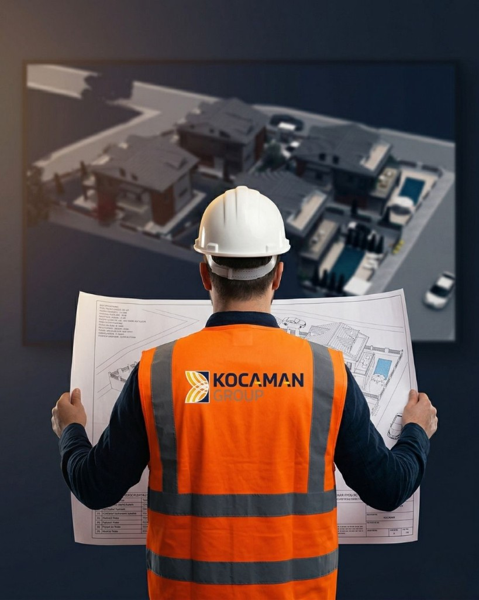
Projelerden Kareler
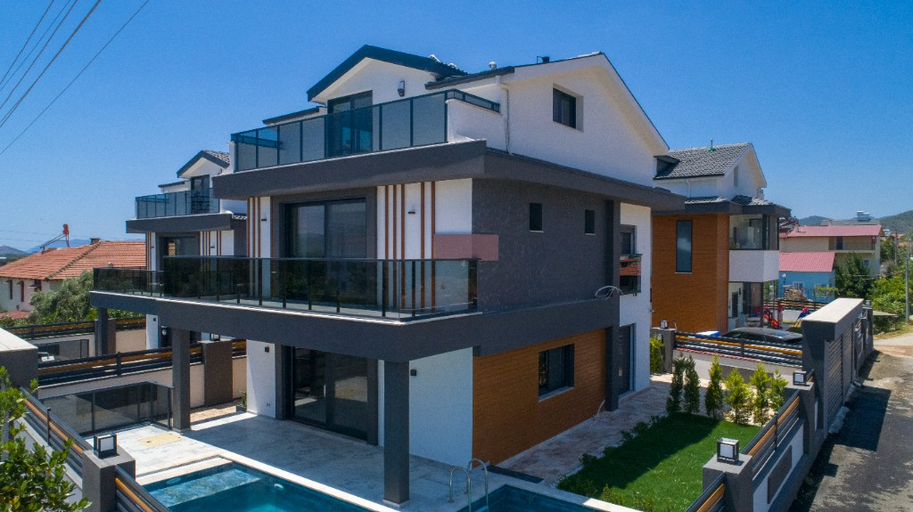
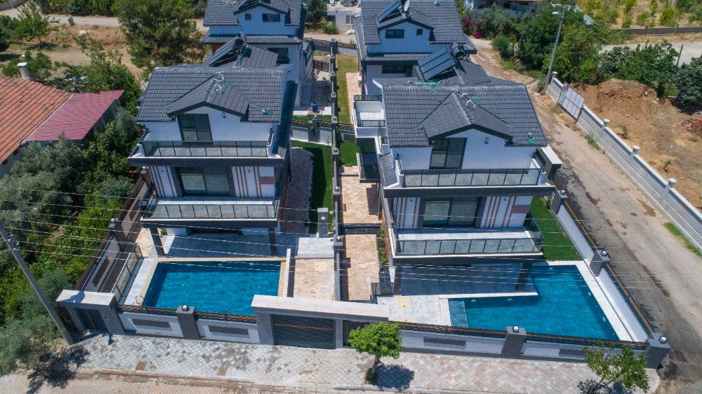
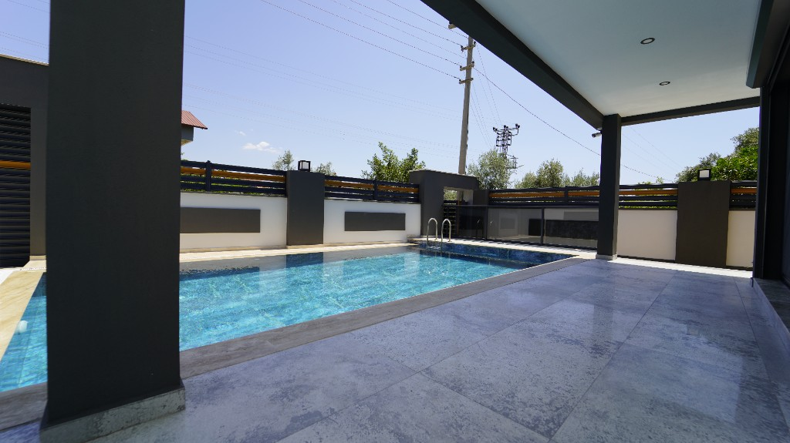
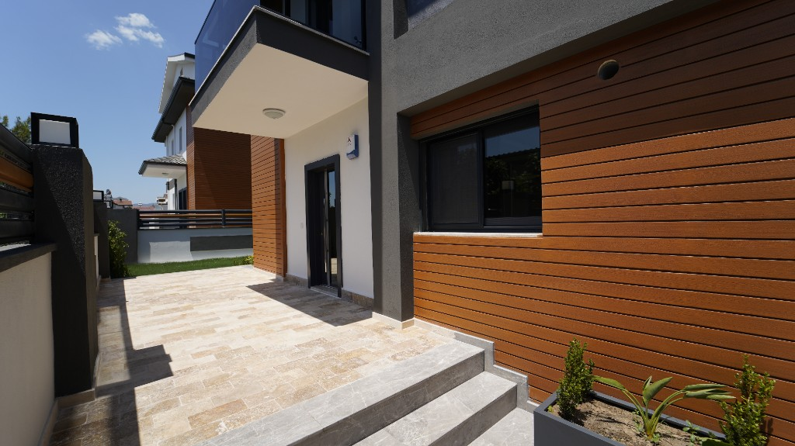
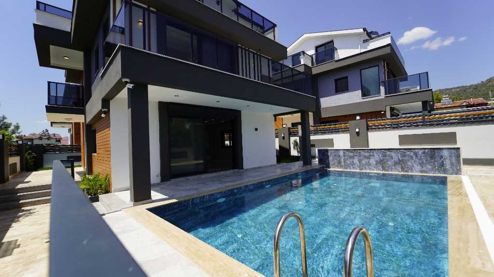
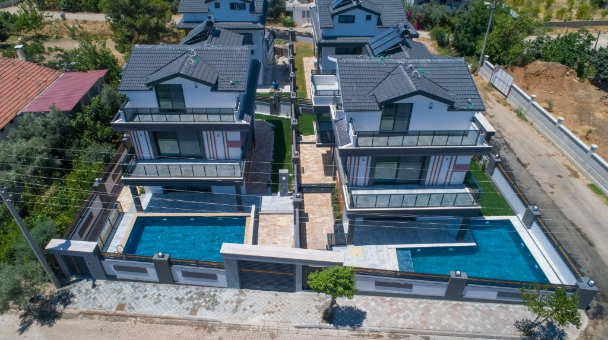
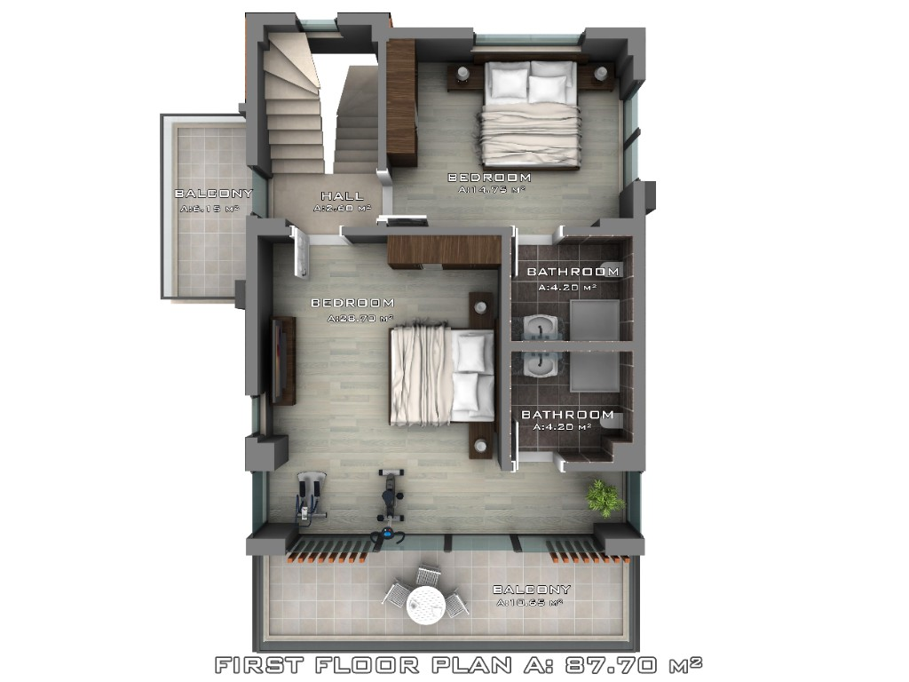
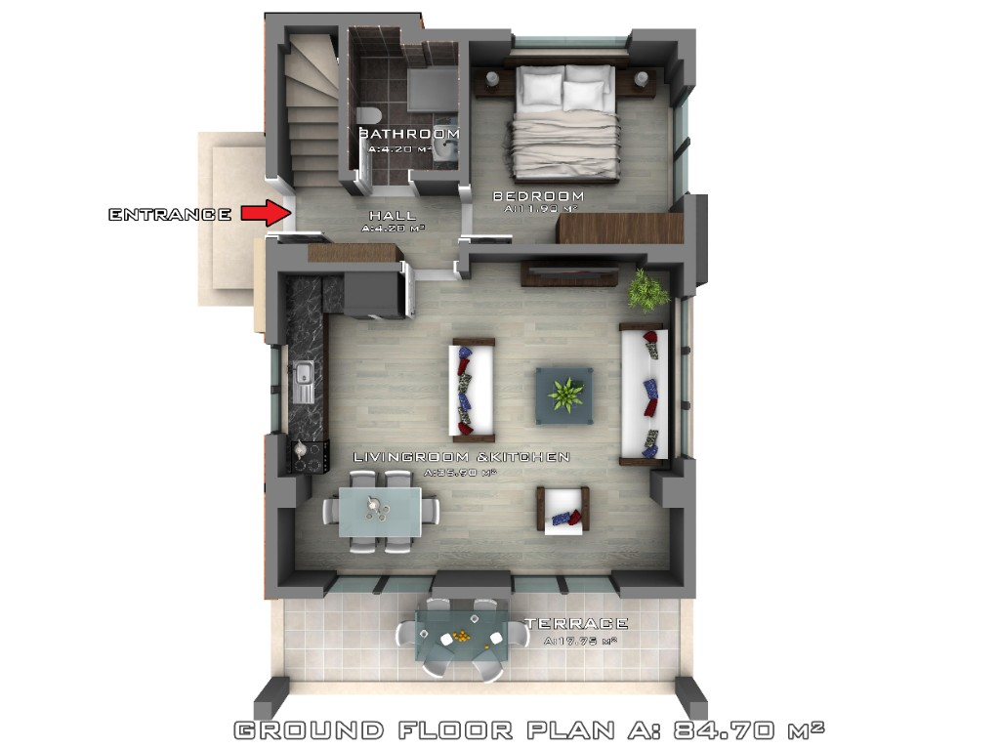
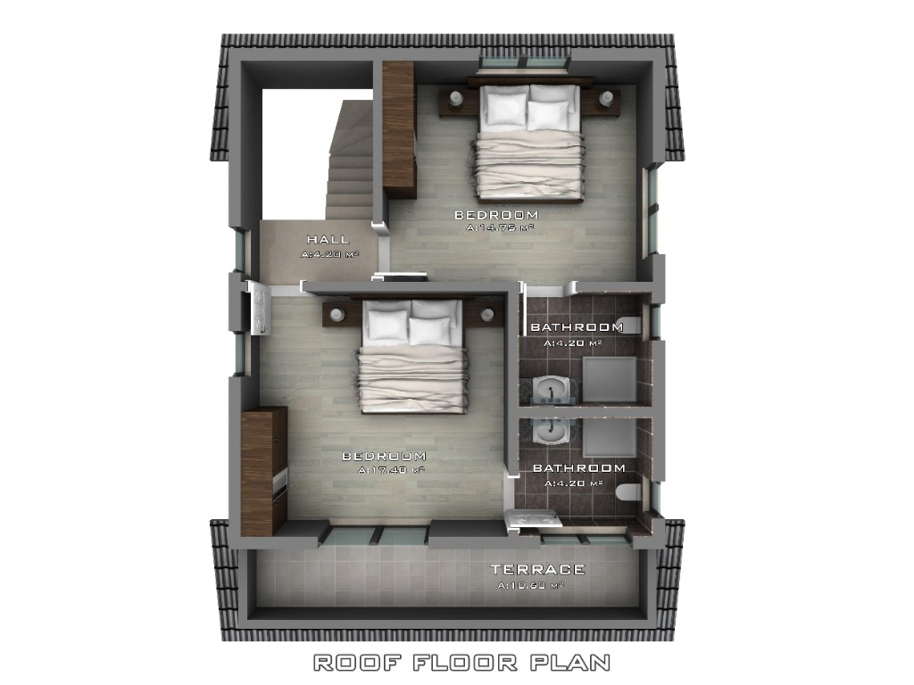
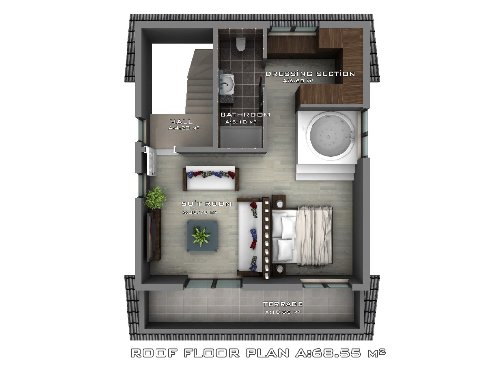
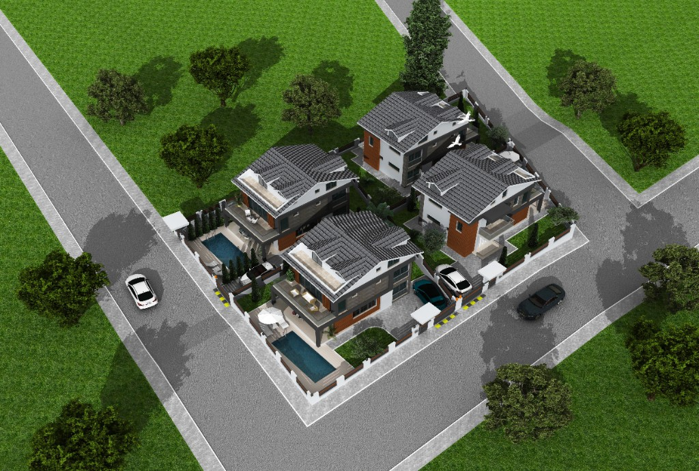
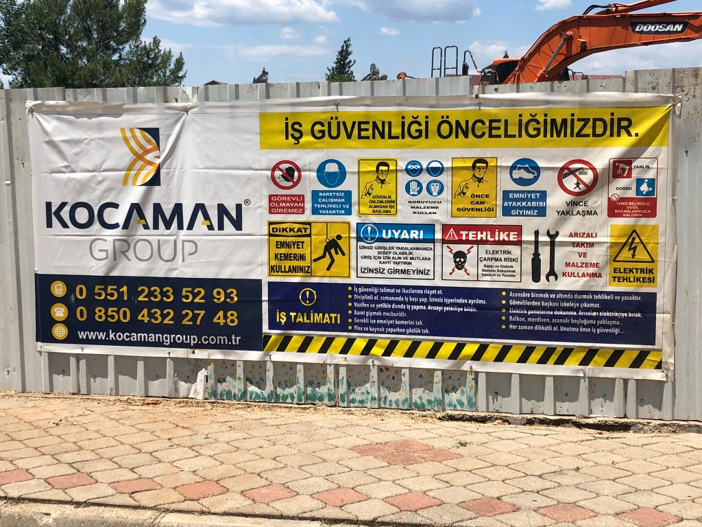

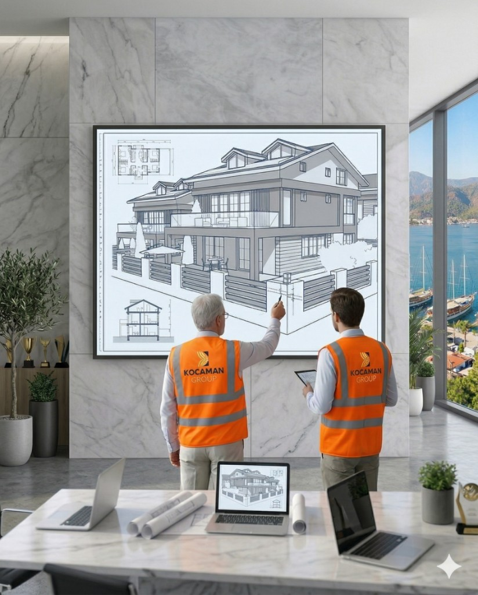
Köklerimiz: mühendislik ve kurumsal güvence
Kuruluşumuzdan bu yana inşa ettiğimiz sayısız yapı ile sektöre yön veren Kocaman Group, 2000’li yıllarda ivme kazanan büyüme süreciyle müteahhitlik sektörünün güvenilir markalarından biri haline gelmiştir. İnşaat sektörünün yaşamsal bir sorumluluk olduğu bilinciyle, her projemizi en ince ayrıntısına kadar titizlikle planlıyoruz.
Entegre çözümler, kusursuz uygulama
Bünyemizde bulunan mimarlık ve inşaat şirketlerimizin sinerjisi sayesinde, projelerimizi tasarım aşamasından anahtar teslimine kadar bütünleşik bir yapıda yönetiyoruz. Büyük ölçekli kentsel tasarım projelerinden butik mimari uygulamalara kadar her çalışmamızda; uzman kadromuz, yenilikçi bakış açımız ve deprem güvenliğine verdiğimiz üst düzey önemle bölgede güvenilir çözüm ortaklarından biriyiz.
- Tasarımdan anahtar teslime entegre proje yönetimi
- Deprem güvenliğine verdiğimiz öncelik ve mühendislik disiplini
- Kentsel dönüşümden butik mimariye uzanan deneyim
İnşa ettiğimiz yapı türleri
Apartman ve apart dairelerden müstakil villalara, mağaza ve ofis gibi iş yerlerine kadar geniş bir yelpazede yapılar hayata geçiriyoruz; her projede aynı mühendislik disiplini ve kalite standardı geçerlidir.
Apartman ve apart daireler
Site ve apartman projelerinde daire tipolojileri, çekirdek ve ortak alan koordinasyonu, zemin-çatı mühendisliği ve anahtar teslim konut teslimi.
Müstakil ve özel villa
İkiz, tripleks ve müstakil villalarda cephe, peyzaj, teras ve havuz gibi özel detaylarla butik mimari ve uygulama.
İş yeri ve ticari yapılar
Mağaza, ofis, showroom ve karma kullanım yapılarında cephe sistemleri, iç mekân düzeni ve mekanik-elektrik altyapısının tek elden koordinasyonu.
İnşaat vizyonumuz
Türkiye ve faaliyet gösterdiğimiz tüm pazarlarda; kaliteyi bir zorunluluk değil bir imza olarak gören, kentsel dönüşüme yön veren ve sürdürülebilir değer üreten öncü bir inşaat markası olmak.
İnşaat misyonumuz
Mimari estetik ile mühendislik disiplinini bir araya getirerek; deprem güvenliği yüksek, erişilebilir maliyetli ve müşteri memnuniyeti odaklı yaşam alanları üretmek. Güçlü ekip ruhumuzla, beklentilerin ötesine geçen nitelikli yapılar inşa etmeyi görev ediniyoruz.
Değerlerimiz
Kaliteyi Referans Alma
Her projede kaliteyi bir hedef değil, değişmez bir referans olarak kabul eder; tüm süreçlerimizi en yüksek standartlarda yönetiriz.
Doğru Planlama ve Disiplin
Başarının temelinin doğru planlama olduğuna inanır; projelerimizi ilk adımdan teslim aşamasına kadar kontrollü, sistemli ve şeffaf bir yaklaşımla yönetiriz.
Müşteri Odaklılık
Müşterilerimizin beklentilerini sürecin merkezine alır; memnuniyeti yalnızca sonuçta değil, tüm iş sürecinde öncelikli bir değer olarak görürüz.
Güçlü Ekip ve İş Birliği Kültürü
Mimarlık ve inşaat disiplinlerini entegre eden güçlü ekip yapımızla, ortak akıl ve iş birliği anlayışı sayesinde projelerimize sürdürülebilir değer katarız.
Güven ve Sorumluluk
Deprem güvenliğini temel öncelik kabul eder; güvenli, dayanıklı ve uzun ömürlü yapılar üretmeyi kurumsal sorumluluğumuz olarak benimseriz.
Yenilikçilik ve Sürekli Gelişim
Değişen ihtiyaçlara ve çağdaş beklentilere uyum sağlayan yenilikçi çözümler geliştirerek, sektördeki konumumuzu sürekli ileri taşırız.
Keşiften ruhsata, kaba inşaattan ince işçiliğe kadar her aşamayı şeffaf bütçe, gerçekçi takvim ve anlaşılır raporlama ile yönetiyoruz. “Ne zaman, ne kadar?” sorularına sürpriz bırakmadan, erken uyarı kültürüyle cevap veriyoruz.
Depreme dayanıklılık, yapısal bütünlük ve malzeme izlenebilirliği şantiyemizin kırmızı çizgisidir. Denetimlere hazır dokümantasyon, günlük kontrol disiplini ve uzman gözetimiyle standartları yazılı hale getiriyoruz.
Enerji verimliliği, atık yönetimi ve yönetmeliklere tam uyum; projeyi yalnızca bugünün değil, yarının kullanım koşullarına da hazırlıyoruz. Tedarik zinciri, iş güvenliği ve çevresel duyarlılık operasyonumuzun ayrılmaz parçasıdır.
- Konut, villa, karma kullanım ve ticari yapılarda anahtar teslim, uçtan uca proje yönetimi
- Statik, mekanik, elektrik ve saha lojistiği — tek koordinasyon, tek sorumluluk
- BIM ve dijital modelleme ile çok disiplinli uyum (proje kapsamına göre)
- İSG kültürü, çevre duyarlı şantiye ve ölçülebilir kalite güvencesi